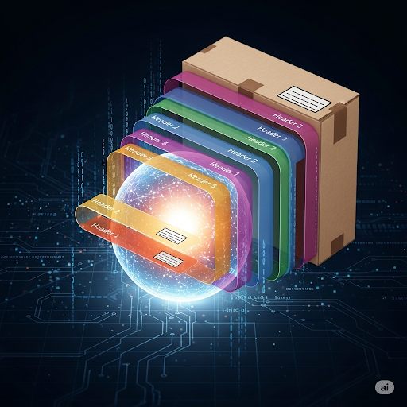
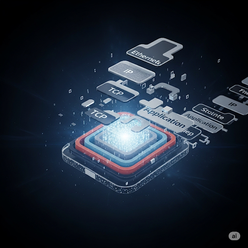

OSI Model Notes
The **OSI Model** stands for **Open Systems Interconnection Model**. It's a conceptual framework that standardizes the functions of a telecommunication or computing system into seven distinct layers.
Why It Was Created and Who Created It 🌎
The OSI model was created to solve a major problem in the early days of computer networking: **incompatibility**. Before the model, different networking technologies and vendors had their own proprietary communication protocols, which made it difficult, if not impossible, for systems from different manufacturers to communicate with each other.
It was created by the **International Organization for Standardization (ISO)** and the **International Telegraph and Telephone Consultative Committee (CCITT)** in the late 1970s and formally published in 1984. The goal was to provide a universal language and framework for computer networking so that diverse systems could interoperate using a set of standard protocols.
The Concept of Encapsulation and Decapsulation 📦
Encapsulation and decapsulation are fundamental processes in the OSI model that describe how data is packaged for transmission and then unpacked at its destination.
Encapsulation
Encapsulation is the process of adding a **header** (and sometimes a **trailer**) to data as it moves down through the OSI layers on the sending computer. Each layer treats the data from the layer above it as a payload and adds its own specific control information. This process transforms the data into a **Protocol Data Unit (PDU)** at each layer.
- **Application Layer (Layer 7)**: The user's data (e.g., an email or a web page request) is generated.
- **Transport Layer (Layer 4)**: The data is broken into smaller chunks called **segments** (for TCP) or **datagrams** (for UDP). A header containing port numbers and sequence information is added.
- **Network Layer (Layer 3)**: The segment/datagram is encapsulated into a **packet**. A header with the source and destination IP addresses is added, enabling routing across networks.
- **Data Link Layer (Layer 2)**: The packet is encapsulated into a **frame**. A header with the source and destination MAC addresses and a trailer for error checking are added.
- **Physical Layer (Layer 1)**: The frame is converted into a stream of raw **bits** (electrical signals, light pulses, or radio waves) and transmitted over the physical medium.

Decapsulation
Decapsulation is the reverse process that occurs on the receiving computer. As the data travels up through the layers, each layer removes the header (and trailer) that was added by its corresponding layer on the sending side. This stripping process continues until the original, unadulterated data is delivered to the application at the top layer.
- **Physical Layer (Layer 1)**: The receiving device converts the incoming bits back into a frame.
- **Data Link Layer (Layer 2)**: The device checks the MAC address in the frame header. If it matches, the header and trailer are removed, and the remaining packet is passed to the network layer.
- **Network Layer (Layer 3)**: The device inspects the IP address in the packet header. If it matches, the header is removed, and the segment/datagram is sent to the transport layer.
- **Transport Layer (Layer 4)**: The device uses the port number in the header to identify the correct application. It reassembles the segments into the original data stream and removes the header.
- **Application Layer (Layer 7)**: The original data is delivered to the user's application, ready to be read.

Deep Dive into Application Layer
The **Application Layer**, also known as Layer 7, is the top layer of the OSI model. It is the only layer that directly interacts with the user and the software applications they use to communicate over a network. This layer provides the interface between the user's application and the network services.
Key Functions and Protocols
The Application Layer's primary function is to enable user-facing applications to access network resources. It is responsible for:
- **Identifying Communication Partners**: Determining if a communication partner exists with the required network access and resources.
- **Synchronizing Communication**: Ensuring that the communicating applications are synchronized and can agree on the process of communication.
- **Error Recovery and Integrity**: Managing data integrity and error handling for the application itself, though lower layers handle most network-level errors.
Here are some of the most important protocols that operate at the Application Layer:
- **HTTP (Hypertext Transfer Protocol)**: The foundation of data communication for the World Wide Web, used for retrieving web pages and other resources.
- **FTP (File Transfer Protocol)**: Used for transferring files between a client and a server on a computer network.
- **SMTP (Simple Mail Transfer Protocol)**: The standard protocol for sending email across the internet.
- **DNS (Domain Name System)**: Translates human-readable domain names (like www.google.com) into IP addresses that computers can understand.
- **Telnet (Telecommunication Network)**: An early protocol used for remote login and command-line access to a server.
- **SNMP (Simple Network Management Protocol)**: Used for managing and monitoring network devices.
Deep Dive into Presentation Layer
The **Presentation Layer**, or Layer 6, is the second-to-last layer of the OSI model. Its main job is to ensure that data is presented in a way that the receiving application can understand. This layer acts as a translator, converting data from the application format to a common format and vice versa. It is concerned with the syntax and semantics of the information transmitted.
Key Functions and Protocols 🎨
The Presentation Layer is not directly involved with network communication but with the preparation of data for transmission or its final delivery to the application. Its core functions include:
- **Data Formatting and Translation**: This is the layer's most crucial role. It ensures that the data sent by the application layer of one system is readable by the application layer of another. For example, it can translate between different character encoding schemes like **ASCII** and **EBCDIC**.
- **Encryption and Decryption**: It is responsible for encrypting data before it is transmitted and decrypting it upon receipt. This ensures the security and privacy of the data. For instance, **SSL (Secure Sockets Layer)** and **TLS (Transport Layer Security)** operate at this layer to secure web traffic.
- **Compression and Decompression**: The Presentation Layer can compress data to reduce the number of bits that need to be transmitted on the network. This improves the speed and efficiency of data transfer. When the data is received, the layer decompresses it to its original form.
Analogy: A Universal Language Translator 🌐
Imagine two people from different countries want to communicate, but they speak different languages. They hire a translator who knows both languages.
- **Person A (The Sender's Application Layer)**: Speaks English and gives their message to the translator.
- **The Translator (The Presentation Layer)**: Takes the English message and translates it into a universal, intermediate language (a common format) that the other translator can understand. At this stage, the translator might also condense the message (compression) and write it in a secret code (encryption) to protect its content.
- **The Second Translator (The Receiver's Presentation Layer)**: Receives the message in the universal format. They first decode the secret message (decryption) and then expand the condensed message (decompression). Finally, they translate it into the native language of the other person.
- **Person B (The Receiver's Application Layer)**: Receives the final, translated message in their native language (e.g., Spanish) and can now understand it perfectly.
The Presentation Layer ensures that the message's content (the "what") remains intact, regardless of the format it started in. This makes it possible for applications on different platforms with varying internal data formats to communicate seamlessly.

What is a session and Deep dive into session Layer
A **session** is a temporary, interactive information exchange between two or more communicating devices, also known as a conversation or dialogue. It represents the logical connection established, maintained, and terminated between applications on different devices.
Deep Dive into the Session Layer (Layer 5)
The **Session Layer**, or Layer 5, is responsible for establishing, managing, and terminating sessions between two applications. It handles the "dialogue control" of a conversation, ensuring that communication between applications is orderly and synchronized. While the Transport Layer (Layer 4) manages the flow of data between ports, the Session Layer focuses on the interaction between the **applications** themselves.
Key Functions and Protocols 🤝
The Session Layer provides services that are crucial for a stable and organized conversation. Its main functions include:
- **Session Establishment and Termination**: It's the job of this layer to set up and tear down a session. It negotiates and agrees on the rules for the communication, such as who speaks first and for how long.
- **Dialogue Control**: This is the most important function. The Session Layer determines whether communication will be a **half-duplex** (one-way at a time) or **full-duplex** (two-way simultaneously) conversation. It also manages which party is allowed to transmit at any given time.
- **Synchronization and Checkpointing**: This layer inserts checkpoints or synchronization points into the data stream. If a session fails mid-transfer, the data exchange can be resumed from the last checkpoint rather than starting all over again. This is particularly useful for transferring large files.
Analogy: A Job Interview 💼
Think of a job interview. It's a structured conversation with a clear start, middle, and end.
- **Establishment**: The interviewer and the candidate agree on a time and place for the interview to begin. They shake hands, and the conversation is officially "established."
- **Dialogue Control**: The interviewer asks a question, and the candidate answers. The "rules" of the dialogue are understood—only one person speaks at a time (half-duplex). If the interview were a casual chat, both could speak at once (full-duplex).
- **Synchronization**: Imagine the interview is a very long one, perhaps a multi-hour technical test. If there's a power outage, they can agree to resume the test from the last completed section rather than starting from the beginning. This "checkpoint" ensures progress isn't lost.
- **Termination**: The interviewer says, "Thank you for your time," and the candidate leaves. The conversation is officially terminated.
While the lower layers (Transport, Network, etc.) handle the physical delivery of the data (the "sound waves" of their voices), the Session Layer ensures the conversation itself is organized and productive. It manages the logical flow of the dialogue, not the physical bits being transmitted. Some protocols that provide Session Layer services include **NetBIOS**, **RPC** (Remote Procedure Call), and **PPTP** (Point-to-Point Tunneling Protocol).

Deep dive into transport layer
The **Transport Layer**, or Layer 4, is the first layer of the OSI model that handles end-to-end data transfer between applications on different hosts. It acts as the liaison between the application-focused layers above it (Layers 5, 6, and 7) and the network-focused layers below it (Layers 1, 2, and 3). Its primary role is to ensure that data is delivered reliably, in order, and without errors.
Key Functions and Protocols 🤝
The Transport Layer is responsible for segmenting data from the Session Layer and reassembling it at the destination. It manages the logical communication between two processes on different computers. Its core functions are:
- **Segmentation and Reassembly**: It breaks down data received from the upper layers into smaller, manageable chunks called **segments**. At the receiving end, it reassembles these segments into the original data stream.
- **Multiplexing and Demultiplexing**: The layer uses **port numbers** to manage multiple applications running on a single host. **Multiplexing** allows data from several applications to be transmitted over a single network connection. **Demultiplexing** directs incoming data segments to the correct application based on their port number.
- **Error Control**: It can ensure that data arrives without errors. This is typically done using checksums and acknowledgment packets. If a segment is lost, it can be retransmitted.
- **Flow Control**: This function prevents a fast sender from overwhelming a slow receiver. It uses mechanisms like sliding windows to regulate the rate of data transmission.
- **Connection-Oriented vs. Connectionless Communication**: The Transport Layer offers two main types of services:
- **Connection-Oriented (TCP)**: A formal connection is established between two hosts before data is sent. It guarantees reliable, ordered delivery and includes robust error and flow control. Think of it as a phone call where you verify the connection before you speak. TCP is used for applications like web browsing, email, and file transfers where reliability is critical.
- **Connectionless (UDP)**: This service doesn't establish a connection beforehand. It's faster and has less overhead but does not guarantee delivery. It's like sending a postcard—you drop it in the mail and hope it gets there. UDP is used for applications where speed is more important than reliability, such as streaming video, online gaming, and DNS lookups.
Transport Layer Protocols: TCP vs. UDP
At the **transport layer**, data is encapsulated into a **segment** or a **datagram**, depending on the protocol used. The two main protocols at this layer are TCP and UDP, and what they contain differs significantly.
TCP Segment
A **TCP segment** is used for reliable, connection-oriented communication. It has a variable-length header (20 to 60 bytes) that contains information crucial for ensuring data integrity and correct delivery. The key components of a TCP segment are:
-
Source and Destination Port Numbers: These are 16-bit fields that identify the specific application on the source and destination hosts. They enable **multiplexing** and **demultiplexing**, allowing multiple applications to use the network simultaneously.
-
Sequence Number: A 32-bit number that tracks the order of the bytes being sent. It is essential for reassembling the data at the receiving end, even if segments arrive out of order.
-
Acknowledgment Number: A 32-bit number used by the receiver to inform the sender of the next byte it expects to receive. This mechanism provides **reliable delivery** by ensuring all data is received.
-
Header Length: This field indicates the size of the TCP header. Since the header can include optional fields, this value is necessary for the receiver to know where the data payload begins.
-
Control Flags: A set of 1-bit flags (like SYN, ACK, FIN, RST) that control the connection, handling everything from its establishment and termination to flow control and error handling.
-
Window Size: This field is used for **flow control**, indicating how many bytes the receiver is willing to accept. This prevents the sender from overwhelming the receiver with too much data too quickly.
-
Checksum: A 16-bit field used to detect errors or corruption in the segment.
UDP Datagram
In contrast, a **UDP datagram** is used for connectionless, fast communication where reliability is not the primary concern. Its header is much simpler and has a fixed size of 8 bytes. The key components of a UDP datagram are:
-
Source and Destination Port Numbers: These fields serve the same purpose as in TCP, identifying the source and destination applications.
-
Length: A 16-bit field that specifies the total length of the UDP datagram, including the header and the data.
-
Checksum: An optional 16-bit field used for error detection.
The simplicity of the UDP datagram makes it much faster than a TCP segment, but it lacks the features for reliable delivery, such as sequencing, acknowledgments, and flow control.
Analogy: The Postal Service 📬
Imagine you're sending a large book to a friend. You can't send it all at once, so you tear out the pages and put them in separate, numbered envelopes.
- **You (The Session Layer)**: You hand the book to the postal service.
-
**The Postal Service (The Transport Layer)**: This is where the
magic happens.
- **Segmentation**: It puts each page (segment) into its own envelope.
- **Addressing (Port Number)**: It writes a specific room number (the port number) on each envelope to ensure the pages are delivered to the correct person in the house, even if multiple people live there (multiplexing).
- **Delivery Guarantee (TCP)**: If you choose a registered mail service (TCP), the post office will get a signature for each envelope, ensuring every page is accounted for and delivered in order. If an envelope is lost, they will ask you to send it again (error control).
- **No Guarantee (UDP)**: If you use regular mail (UDP), you just drop the envelopes in the mailbox. It's faster, but you don't know if they all arrived, or if they arrived in the right order.
The Transport Layer is concerned with getting the entire message from the application of one computer to the application of another. It doesn't care about the physical route the data takes (that's the job of the Network Layer) but ensures the delivery is reliable and properly managed.

Deep dive into Network Layer
The **Network Layer**, or Layer 3, is responsible for addressing and routing data packets across different networks. It acts as the backbone for inter-network communication, ensuring that a data packet from a source on one network can find its way to a destination on another, potentially distant, network. This layer is where the concept of the internet truly comes to life.
Key Functions and Protocols 🗺️
The Network Layer's main role is to facilitate the routing of data from source to destination, regardless of the physical path taken. Its key functions are:
- **Logical Addressing**: The Network Layer uses **logical addresses**, most notably **IP addresses (IPv4 and IPv6)**, to uniquely identify devices on a network. Unlike a physical address (MAC address) which is fixed to a network interface card, an IP address can change, allowing a device to move from one network to another.
- **Routing**: This is the core function of the Network Layer. **Routers**, the primary devices at this layer, use routing tables to determine the best path for a data packet to travel from its source to its destination. The packets are forwarded from one router to the next until they reach the correct network.
- **Packetizing**: The Network Layer receives segments from the Transport Layer and encapsulates them into **packets**. A header containing the source and destination IP addresses is added, providing the necessary information for routing.
- **Fragmentation and Reassembly**: If a packet is too large for a particular network link, the Network Layer can fragment it into smaller pieces. These fragments are then reassembled at the destination to recreate the original packet.
Analogy: The Postal System 📮
Imagine you want to send a letter to a friend in another country.
- **Your Home Address (MAC Address)**: This is your local, physical address. The post office knows how to deliver a letter to your house, but it doesn't help get the letter across the country.
- **The City and State (IP Address)**: This is the logical address. The IP address tells the postal service (the router) the general area where your friend lives.
- **The Post Office Sorting Hubs (Routers)**: The letters travel between different sorting hubs (routers). Each hub reads the destination city/state (IP address) and forwards the letter to the next hub that is closer to the final destination. The routers don't care about the specific house number (MAC address) until the packet reaches the final network.
- **The Letter (The Packet)**: The letter itself is the packet. It contains the data (the message) and the necessary routing information (the address).
The Network Layer ensures that your letter (the packet) gets from your city to your friend's city. It doesn't care about the final leg of the journey to the specific house (which is handled by the Data Link Layer) but focuses on the large-scale, inter-network routing. The most prominent protocol at this layer is the **Internet Protocol (IP)**, which defines the addressing and routing scheme used on the internet.

Deep dive into Data link layer
The **Data Link Layer**, or Layer 2, is responsible for node-to-node data transfer. It ensures that data is reliably transmitted between adjacent network devices, like two computers on the same local network or a computer and a router. This layer is primarily concerned with the physical addressing of devices and handling errors that occur on the physical medium.
Key Functions and Protocols 🔗
The Data Link Layer is the second lowest layer of the OSI model, acting as a crucial bridge between the Network Layer (Layer 3) and the Physical Layer (Layer 1). Its main functions are:
- **Framing**: The Data Link Layer takes the packets from the Network Layer and encapsulates them into **frames**. Each frame has a header and a trailer, which contain the source and destination **MAC addresses** and error-checking information.
- **Physical Addressing (MAC Addresses)**: This layer uses **Media Access Control (MAC) addresses** to uniquely identify devices on a local network segment. Unlike an IP address, which is logical and can change, a MAC address is a permanent, physical address embedded in a network interface card (NIC) by the manufacturer.
- **Error Control**: It detects and, in some cases, corrects errors that may occur during the transmission of data over the physical medium. It uses a trailer with a **Cyclic Redundancy Check (CRC)** to detect if a frame has been corrupted.
- **Flow Control**: It regulates the rate at which data is sent to prevent a fast sender from overwhelming a slow receiver on the same network segment.
- **Media Access Control**: This is a sublayer of the Data Link Layer that manages how devices on a shared medium (like an Ethernet cable) access the network. Protocols like **CSMA/CD** (Carrier Sense Multiple Access with Collision Detection) are used to prevent data collisions when multiple devices try to transmit at the same time.
Sublayers of the Data Link Layer 📜
The IEEE 802 standard divides the Data Link Layer into two sublayers:
- **Logical Link Control (LLC) Sublayer**: This sublayer is responsible for communication between the Network Layer and the MAC sublayer. It provides flow control and error control services and identifies the Network Layer protocol (e.g., IP) that the data packet belongs to.
- **Media Access Control (MAC) Sublayer**: This sublayer controls how a device on a network gains access to the data and permission to transmit it. It handles the physical addressing (MAC addresses) and resolves contentions for network access.
Analogy: Delivering Mail in a Neighborhood 🏘️
Imagine the Network Layer's job is to get a letter from one city to another (IP routing). The Data Link Layer's job is to make the final delivery to the correct house within a specific neighborhood.
- **The Mail Carrier (Data Link Layer)**: The carrier is responsible for delivering the letter to the correct house.
- **The Mailbox (The Physical Medium)**: This is where the letter is placed.
- **The Street Address (MAC Address)**: The carrier uses the specific street address to find the correct house. The IP address might get the letter to the right city (network), but the MAC address is the local address that ensures it gets to the right doorstep (device) on that street (network segment).
The Data Link Layer ensures that the data (the letter) gets from one local device to another without errors. It uses the physical addressing and error-checking mechanisms to guarantee reliable delivery on a small scale, within a single network. The most common protocols at this layer are **Ethernet** for wired networks and **Wi-Fi (802.11)** for wireless networks.

Deep dive into physical layer
The **Physical Layer**, or Layer 1, is the lowest layer of the OSI model. Its primary function is to handle the physical transmission of raw data bits over a communication medium. This layer is all about the hardware, cables, and physical signals that connect network devices. It's the only layer that directly deals with the actual transmission medium, whether it's copper wire, fiber optic cable, or radio waves.
Key Functions and Components ⚙️
The Physical Layer is concerned with the "how" of data transmission—how the bits are sent and received. Its main functions include:
- **Bit-Level Transmission**: It defines the electrical, mechanical, and procedural specifications for sending and receiving raw data bits. It doesn't care what the bits mean; it simply focuses on moving a stream of 1s and 0s.
- **Media and Connectors**: It specifies the type of physical medium used, such as twisted-pair copper cables (like Ethernet), coaxial cables, fiber optics, or wireless technologies (Wi-Fi, Bluetooth). It also defines the physical connectors used, like **RJ45** for Ethernet.
- **Signaling and Encoding**: This layer is responsible for converting the binary data (1s and 0s) into electrical signals, light pulses, or radio frequencies that can be transmitted over the medium. For example, it might use different voltage levels to represent 1s and 0s.
- **Topology**: It defines the physical layout of the network, such as **bus**, **star**, or **ring** topologies, and how devices are connected to each other.
- **Synchronization**: It ensures that the sending and receiving devices are synchronized so the receiver can correctly interpret the stream of bits.
Analogy: A Physical Road and Traffic Signals 🚦
Think of the Physical Layer as the physical infrastructure that makes transportation possible.
- **The Road (The Physical Medium)**: This is the actual cable, fiber optic strand, or airwaves. It's the path the data will travel on. Just like a dirt road is different from a superhighway, an Ethernet cable is different from a fiber optic cable.
- **The Vehicles (The Raw Bits)**: These are the individual bits of data (1s and 0s). They are the "cargo" that will be transported over the road.
- **Traffic Signals and Road Signs (Signaling and Synchronization)**: This is the mechanism that ensures the vehicles don't crash and that traffic flows smoothly. It dictates when a vehicle can go, stop, or turn. Similarly, the Physical Layer's signaling ensures that the bits are sent and received in an orderly manner.
- **The Tarmac, Paint, and Lanes (Physical and Electrical Specifications)**: These are the standards that define the road itself—how wide it is, what it's made of, and how the lanes are marked. The Physical Layer defines these same types of standards for the network, ensuring different devices can use the same medium.
The Physical Layer is the foundational level of the OSI model. Without it, the other layers would have no medium on which to transmit their data. Devices that operate at this layer include **hubs**, **cables**, **repeaters**, and **network interface cards (NICs)**.

What happens after data goes out of physical layer
After data is sent from the Physical Layer, it moves to the **Data Link Layer** (Layer 2) on the receiving device. This process is the beginning of **decapsulation**, where the data is transformed from a raw bitstream back into a usable format.
The Journey of a Packet
The process that occurs at the Data Link Layer is the reverse of what happens during encapsulation on the sending device. Here's a step-by-step breakdown:
- **Bitstream to Frame**: The Physical Layer (Layer 1) on the receiving end takes the raw, physical signals (electrical, light, or radio waves) and converts them back into a stream of digital bits (1s and 0s). It then hands this bitstream up to the Data Link Layer.
- **Frame Processing**: The Data Link Layer reassembles the bits into a **frame**. It then examines the frame's header and trailer, which contain the destination **MAC address** and a **Cyclic Redundancy Check (CRC)** for error detection.
- **Error and Address Check**: The layer performs a CRC check to determine if the frame was corrupted during transmission. It also checks the destination MAC address to see if the frame is intended for this specific device. If the address matches and no errors are found, the layer proceeds.
- **Decapsulation**: The Data Link Layer strips its header and trailer from the frame, leaving only the original **packet** that was received from the Network Layer on the sending device.
- **Passing Up the Stack**: The now-stripped packet is passed up to the **Network Layer** (Layer 3) for further processing. This marks the end of the Data Link Layer's job and the start of the next phase of decapsulation.
The entire process of decapsulation continues as the data moves up the OSI layers, with each layer stripping its respective header until the original data is delivered to the user's application.
Which devices are involved in each layer
Many networking devices operate at specific layers of the OSI model, with some devices operating at multiple layers. Here is a breakdown of common devices and the layer they are most associated with.
Layer 1: Physical Layer 🔌
This layer handles the physical transmission of data. Devices at this layer are focused on the raw bitstream and the physical connections.
- **Hubs**: A basic device that connects multiple computers and sends incoming data packets to all devices on the network.
- **Repeaters**: Boosts and regenerates a signal to extend the distance it can travel over a network.
- **Cables and Connectors**: Includes Ethernet cables, coaxial cables, fiber optic cables, and the connectors (like RJ45) that physically link devices.
Layer 2: Data Link Layer 🌉
This layer ensures reliable data transfer between two nodes on the same network segment. Devices here use physical (MAC) addresses.
- **Switches**: A more intelligent version of a hub that learns the MAC addresses of connected devices and forwards data frames only to the intended destination, reducing network traffic.
- **Bridges**: Connects two separate network segments and filters traffic based on MAC addresses.
- **Network Interface Cards (NICs)**: The hardware component in a computer that allows it to connect to a network.
Layer 3: Network Layer 🗺️
This layer is responsible for routing data between different networks. Devices at this layer use logical (IP) addresses to determine the best path for data.
- **Routers**: The most prominent device at this layer, routers connect different networks (like your home network to the internet) and forward data packets based on IP addresses.
- **Layer 3 Switches**: A type of switch that can also perform some routing functions, making them useful in large, complex networks.